설비보전기사(구) (2021-03-07 기출문제)
1과목: 설비 진단 및 계측
1. 유량측정에서 사용되는 이론으로 “압력에너지 + 운동에너지 + 위치에너지 = 일정” 하다는 이론은?
- 레이놀즈 정리
- 베르누이 정리
- 플레밍의 법칙
- 나이키스트 안정 판별법
(정답률: 74%)

2. 압전형 가속도 센서에서 전하량을 증폭하는 장치는?
- 전류증폭기
- 전력증폭기
- 전압증폭기
- 전하증폭기
(정답률: 79%)
3. 소음방지대책에 관한 설명으로 옳은 것은?
- 흡음재를 사용하며, 재료의 흡음률은 흡수된 에너지와 입사에너지와의 비로 나타낸다.
- 기계주위에 차음벽을 설치하며, 투과율은 흡수에너지와 투과된 에너지의 비로 나타낸다.
- 차음효과를 증가시키기 위하여 차음벽의 무게와 주파수를 2배 증가시키면 투과손실은 오히려 감소한다.
- 차음벽의 무게나 내부 감쇠에 의한 차음효과는 주파수가 증가함에 따라 감소한다.
(정답률: 57%)
4. 진동의 에너지를 표현하는 방식으로 적합한 것은?
- 실효값
- 양진폭
- 평균값
- 편진폭
(정답률: 81%)
5. 음원으로부터 단위시간 당 방출되는 총 음에너지를 무엇이라 하는가?
- 음원
- 음향 출력
- 음압 실효값
- 음의 전파속도
(정답률: 74%)
6. 교류신호에서 반복파형의 한 주기 사이에서 어느 순간지점의 위치를 나타내는 것은?
- 위상
- 주기
- 진폭
- 주파수
(정답률: 76%)
7. 회전수가 100rpm 이상의 기어에 진동을 이용하여 진단을 할 경우 진단 대상이 아닌 것은?
- 윔기어
- 스퍼기어
- 헬리컬기어
- 직선베벨기어
(정답률: 60%)
8. 정전용량식 센서에서 마주보는 두 전극사이의 정전용량(C)을 구하는 식으로 옳은 것은? (단, A는 전극면적, d는 전극사이의 거리, ε은 유전율이다.)
- C = εd/A
- C = εA/d
- C = d/εA
- C = A/εd
(정답률: 62%)
9. 온도 변환기의 요구기능으로 적절하지 않은 것은?
- 입출력 간은 직류적으로 절연되어 있어야 할 것
- 외부의 노이즈(noise) 영향을 받지 않는 회로일 것
- 입력 임피던스가 낮고, 장거리 전송이 가능할 것
- 주위 온도 변화, 전원 변동 등이 출력에 영향을 주지 말 것
(정답률: 56%)
10. 회전기계에서 주파수 영역에 따라 발생하는 이상현상이 틀린 것은?
- 저주파 – 기초 볼트 풀림이나 베어링 마모로 인해서 발생되는 풀림
- 저주파 – 회전자(rotor)의 축심 회전의 질량분포가 부적정하여 발생하는 진동
- 고주파 – 강제 급유되는 미끄럼 베어링을 갖는 회전자(rotor)에서 발생되는 오일 휩
- 고주파 – 유체기계에서 국부적 압력 저하에 의하여 기포가 발생하는 공동현상으로 인한 진동
(정답률: 65%)
11. 사운드레벨미터의 전기음향 성능을 규정하는 기준 상대 습도는?
- 40%
- 50%
- 60%
- 70%
(정답률: 59%)
12. 단면적이 3cm2이고 길이가 10m인 동선의 전기저항은? (단, 구리의 고유저항은 1.72×10-8[Ωm]이다.)
- 2.86×10-3[Ω]
- 2.86×10-4[Ω]
- 5.73×10-3[Ω]
- 5.73×10-4[Ω]
(정답률: 47%)
13. 설비 진단 기술에 관한 설명으로 틀린 것은?
- 설비의 열호를 검출하는 기술이다.
- 설비의 생산량 증가 방법을 찾는 기술이다.
- 설비의 성능을 평가하고, 수명을 예측하는 기술이다.
- 현재 설비 상태를 파악하고, 고장 원인을 찾는 기술이다.
(정답률: 73%)
14. 측정 하고자 하는 진동 데이터에 1000Hz의 높은 주파수 성분이 있을 때 에일리어싱 영향을 제거하기 위하여 필요한 샘플링 시간은?
- 0.1ms
- 0.5ms
- 1.0ms
- 2.0ms
(정답률: 56%)
15. 주위 온도나 압력 등의 영향, 계기의 고정자세 등에 의한 오차에 해당하는 것은?
- 개인오차
- 과실오차
- 이론오차
- 환경오차
(정답률: 79%)
16. 크고 작은 두 소리를 동시에 들을 때 큰 소리만 듣고 작은 소리는 듣지 못하는 현상을 무엇이라 하는가?
- 도플러 효과
- 마스킹 효과
- 음의 반사효과
- 거리감쇠 효과
(정답률: 79%)
17. 음에 관한 설명으로 틀린 것은?
- 음은 파장이 작고, 장애물이 작을수록 회절이 잘된다.
- 방음벽 뒤에서도 음을 들을 수 있는 것은 음의 회절현상 때문이다.
- 음파가 한 매질에서 타 매질로 통과할 때 구부러지는 현상을 음의 굴절이라고 한다.
- 음파가 장애물에 입사되면 일부는 반사되고, 일부는 장애물을 통과하면서 흡수되고, 나머지는 장애물을 투과하게 된다.
(정답률: 60%)
18. 진동주파수 분석 시 앤티-에일리어성(anti-aliasing)에 사용되는 적합한 필터는?
- 시간 윈도
- 사이드 로브
- 하이패스 필터
- 저역 통과 필터
(정답률: 63%)
19. 작동 시퀀스의 형태에 따른 분류에 해당하지 않는 것은?
- 기억 제어(memory control)
- 이벤트 제어(event control)
- 프로그램 제어(program control)
- 타임 스케줄 제어(time schedule control)
(정답률: 64%)
20. 진동차단에 이용되는 재료가 아닌 것은?
- 고무
- 패드
- 스프링
- 콘크리트
(정답률: 78%)
2과목: 설비관리
21. 치공구 관리 기능 중 보전 단계에서 실시하는 내용이 아닌 것은?
- 공구의 검사
- 공구의 보관과 공급
- 공구의 제작 및 수리
- 공구의 설계 및 표준화
(정답률: 65%)
22. 다음 설비 관리 기능 중 기술 기능에 포함되지 않는 것은?
- 설비 성능 분석
- 보전 업무를 위한 외주 관리
- 설비 진단 기술 이전 및 개발
- 보전기술 개발 및 매뉴얼 갱신
(정답률: 75%)
23. 자주보전의 전계단계 중 전달교육에 의해 설비의 이상적 모습과 설비의 기능구조를 알고 보전 기능을 몸에 익히는 단계는?
- 제4단계 총점검
- 제5단계 자주점검
- 제6단계 정리정돈
- 제7단계 철저한 자주관리
(정답률: 57%)
24. 간접비의 변화를 정확히 추적하기 위해 제품생산에 수행되는 활동들 또는 공정에 초점을 두고 원가를 추정하는 방법은?
- 총원가
- 기회원가
- 제조원가
- 활동기준원가
(정답률: 64%)
25. 공사의 완급도에 대한 내용이다. 다음에서 설명하는 공사의 명칭은?
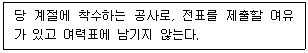
- 계획 공사
- 긴급 공사
- 준급 공사
- 예비 공사
(정답률: 53%)
26. 현상파악을 위해 공정에서 취한 계량치 데이터가 여러 개 있을 때 데이터가 어떤 값을 중심으로 어떤 모습으로 산포하고 있는가를 조사하는데 사용하는 그림은?
- 관리도
- 산점도
- 파레토도
- 히스토그램
(정답률: 61%)
27. 프레스의 고장은 지수분포를 따른다. 평균가동시간은 MTBF, 평균수리시간은 MTTR인 경우에 유용도(Availability)를 계산하는 공식은?
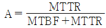
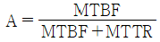
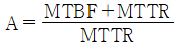
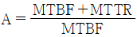
(정답률: 59%)
28. 한계 게이지의 특징으로 틀린 것은?
- 제품의 실제 치수를 읽을 수 없다.
- 다량 제품 측정에 적합하고 불량의 판정을 쉽게 할 수 있다.
- 측정 치수가 정해지고 한 개의 치수마다 한 개의 게이지가 필요하다.
- 면의 각종 모양 측정이나 공작 기계의 정도검사 등 사용 범위가 넓다.
(정답률: 48%)
29. 다음 중 불량 로스의 대책이 아닌 것은?
- 요인계통을 재검토할 것
- 강제열화를 지속시킬 것
- 현상의 관찰을 충분히 할 것
- 원인을 한 가지로 정하지 말고, 생각할 수 있는 요인에 대해 모든 대책을 세울 것
(정답률: 76%)
30. 다음 도표는 설비보전 조직의 한 형태이다. 어떠한 보전 조직인가?
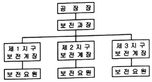
- 집중보전
- 부분보전
- 지역보전
- 절충보전
(정답률: 68%)
31. 재고관리에서 재고가 일정 수준(발주점)에 이르면 일정 발주량을 발주하는 방식은?
- 정량 발주방식
- 정기 발주방식
- 정수 발주방식
- 사용고 발주방식
(정답률: 56%)
32. 설비를 목적에 따라 분류할 때 관리 설비에 해당되는 것은?
- 서비스스테이션, 서비스 숍
- 도로, 항만설비, 육상하역설비
- 본사의 건물, 지점, 영업소의 건물
- 발전설비, 수처리시설, 냉각탑 설비
(정답률: 54%)
33. 휴직오사 계획 시 필요 없는 대기를 없애고 공사의 진행 관리를 쉽도록 하기 위해 가장 경제적인 일정계획을 세울 때 사용하는 순수작업기법은?
- TPM
- PERT
- MTBT
- MTTR
(정답률: 62%)
34. 다음 중 설비 열화의 대책으로 틀린 것은?
- 열화 방지
- 열화 지연
- 열화 회복
- 열화 측정
(정답률: 66%)
35. TPM(total productive maintenance)의 5가지 활동에 포함되지 않는 것은?
- 자주적 대집단 활동으로 실시할 것
- 작업자의 기능수준 향상을 도모할 것
- 설비의 효율화를 저해하는 6대 로스를 추방할 것
- 설비에 강한 작업자를 육성하여 보전체계를 확립할 것
(정답률: 63%)
36. 컴퓨터나 로봇에 여러 전문직 기술을 부여하여 이들이 자동화 공장의 문제점을 인식하고, 이를 해결하기 위한 방법을 스스로 찾안는 것으로 설비의 특정 고장을 스스로 인지하고 더 나아가 고칠 수 있는 시스템은?
- 지능 기술 시스템
- 유연 기술 시스템
- 컴퓨터 제어 시스템
- 유연 기술 셀 시스템
(정답률: 69%)
37. 다음 중 고장해석을 위해 제시되는 방법의 결과가 목적달성에 최적인 대안 선정이 가능한 방법은?
- 상환분석법
- 의사결정법
- 요인분석법
- 행동개발법
(정답률: 51%)
38. 만성고장을 규명하고 개선하기 위한 PM분석의 특징으로 옳은 것은?
- 원인 추구방법은 과거의 경험으로 분석
- 현상 파악은 포괄적으로 파악하여 해석
- 요인발견 방법은 각개의 원인을 나열식으로 나열하여 발견
- 원인에 대한 대책은 원리 및 원칙을 수립하여 대책 강구
(정답률: 57%)
39. 제품별 배치의 특징으로 틀린 것은?
- 작업의 흐름 판별이 용이하다.
- 공정이 단순화되고 직접 확인 관리를 할 수 있다.
- 건물에 설비배치를 합리적으로 할 수 있고, 작업의 융통성이 많다.
- 공정이 확정되므로 검사 횟수가 적어도 되며 품질관리가 쉽다.
(정답률: 44%)
40. 설비보전의 직접기능 중 고장발생 후에 실시되는 제작, 분해, 조립 등을 하는 것을 무엇이라 하는가?
- 사후수리
- 예방수리
- 일상보전
- 예방보전검사
(정답률: 75%)
3과목: 기계일반 및 기계보전
41. 압축기의 설치 및 배관에서 배관의 일반적인 설치, 점검, 정비 및 사용상의 유의사항으로 거리가 먼 것은?
- 관내의 용접가스 및 녹 등의 이물을 완전히 소제하고 부착을 한다.
- 배관길이는 가능한 길게 되도록 부속기기의 위치를 결정한다.
- 압축기와 탱크간의 배관경은 제작회사 지정의 구경을 사용한다.
- 압축기의 분해, 조립에 지장이 없는 위치에서 배관을 한다.
(정답률: 73%)
42. 다음 금속침투법 중 철-알루미늄 합금층이 형성될 수 있도록 철강 표면에 알루미늄을 확산 침투시키는 것은?
- 칼로라이징
- 세라다이징
- 크로마이징
- 실리코나이징
(정답률: 59%)
43. 밸브의 제작 및 사용상 주의해야 할 사항으로 틀린 것은?
- 산성 등 화학 약품을 취급하는 곳에서는 다이어프램 밸브를 사용한다.
- 글루브 밸브를 관에 부착할 때에 밸브 박스 외측에 정확한 흐름 방향을 표시하도록 한다.
- 체크 밸브는 밸브체의 움직임에 따라 역류방지까지 약간의 시간적 늦음이 발생할 수 있다.
- 리프트 밸브의 시트와 밸브 박스 재질은 팽창 계수 차에 의해 밸브 시트가 이완되는 것을 방지하기 위해 다른 재질을 사용한다.
(정답률: 57%)
44. 고장이 없고 보전이 필요하지 않은 설비를 제작하는 보전방식은?
- 예방보전
- 보전예방
- 생산보전
- 사후보전
(정답률: 54%)
45. 기어 감속기를 분류할 때 교쇄 축형 감속기에 속하는 것은?
- 스퍼기어
- 헬리컬기어
- 하이포이드기어
- 스트레이트 베벨기어
(정답률: 51%)
46. 관내 압력이 포화증기압 이하로 되어 소음과 진동이 생기고 양수불능의 원인이 되는 현상은?
- 서징
- 크래킹
- 수격작용
- 캐비테이션
(정답률: 68%)
47. 다음 중 수격현상의 방지책으로 틀린 것은?
- 관로의 지름을 작게 하여 관내유속을 증가시킨다.
- 플라이 휠 장치를 설치하여 회전 속도가 갑자기 감속되는 것을 방지한다.
- 관로에서 펌프 급정지 후에 압력이 강하되는 장소에 서지탱크를 설치한다.
- 관로 중에서 수평에 가까워지는 배관은 수주 분리가 일어나기 쉬우므로 펌프 부근에 관로 모양을 변경시킨다.
(정답률: 61%)
48. 일반적인 기어의 도시에서 선의 사용 방법으로 틀린 것은?
- 잇봉우리원은 굵은 실선으로 표시한다.
- 이골원은 가는 1점 쇄선으로 표시한다.
- 피치원은 가는 1점 쇄선으로 표시한다.
- 잇줄 방향은 통상 3개의 가는 실선으로 표시한다.
(정답률: 47%)
49. KS규격에서 게이지 블록의 교정 등급과 거리가 가장 먼 것은?
- K급
- 3급
- 2급
- 1급
(정답률: 51%)
50. 운동체와 정지체의 기계적 접촉에 의해 운동체를 감속 또는 정지시키고, 정지 상태를 유지하는 기능을 가진 요소는?
- 클러치
- 감속기
- 래칫 휠
- 브레이크
(정답률: 72%)
51. 와셔를 굽히거나 구멍을 만들어 그곳에 끼운 후 볼트, 너트의 풀림을 방지하는 와셔는?
- 폴(pawl)와셔
- 고무(rubber)와셔
- 스프링(spring)와셔
- 중지팜(lock plate)와셔
(정답률: 65%)
52. 일반적인 아크 용접 시 변형과 잔류 응력을 경감시키는 방법이 아닌 것은?
- 용접 시공에 의한 경감법으로는 대칭법, 후진법을 쓴다.
- 용접 전 변형 방지책으로 억제법, 역변형법을 쓴다.
- 용접 금속부의 변형과 잔류 응력을 경감하는 방법으로는 소성법을 쓴다.
- 모재의 열전돋를 억제하여 변형을 방지하는 방법으로는 도열법을 쓴다.
(정답률: 45%)
53. 송풍기의 운전 중 점검사항으로 가장 거리가 먼 것은?
- 베어링의 온도
- 베어링의 진동
- 임펠러의 부식여부
- 윤활유의 적정여부
(정답률: 65%)
54. 일반적인 세정제의 구비조건으로 옳은 것은?
- 잔유물이 생기지 않을 것
- 독성이 많고 방청성이 없을 것
- 휘발성으로 화재의 위험성이 있을 것
- 환경 공해 및 인체에 악영향을 미칠 것
(정답률: 68%)
55. 축의 센터링 불량 시 나타나는 현상이 아닌 것은?
- 진동이 크다.
- 기계성능이 저하된다.
- 구동의 전달이 원활하다.
- 베어링부의 마모가 심하다.
(정답률: 72%)
56. 기어 손상에서 이 부분이 파손되는 주원인이 아닌 것은?
- 균열
- 마모
- 피로 파손
- 과부하 절손
(정답률: 62%)
57. 다음 중 금긋기 작업 시 유의해야 할 사항으로 틀린 것은?
- 금긋기 선은 깊게 여러 번 그어야 한다.
- 기준면과 기준선을 설정하고 금긋기 순서를 결정하여야 한다.
- 같은 치수의 금긋기 선은 전·후, 좌·우를 구분하지 말고 한 번에 긋는다.
- 금긋기가 끝나면 도면의 지시대로 되었는지 확인한 후 다음 작업 공정에 들어간다.
(정답률: 70%)
58. 다음 중 밀링머신으로 절삭(가공)하기 곤란한 것은?
- 총형 절삭
- 곡면 절삭
- 널링 절삭
- 기 홈 절삭
(정답률: 54%)
59. 다음 관 이음 중 분리가 가능한 이음과 거리가 가장 먼 것은?
- 나사 이음
- 패킹 이음
- 용접 이음
- 고무 이음
(정답률: 69%)
60. 플랜지 커플링의 조립과 분해 시의 유의사항 중 옳은 것은?(오류 신고가 접수된 문제입니다. 반드시 정답과 해설을 확인하시기 바랍니다.)
- 조임 여유를 많이 둔다.
- 축과 축의 흔들림은 0.03mm 이내로 한다.
- 분해할 때 플랜지에 과도한 힘을 준다.
- 축과 플랜지 원주면에 대한 흔들림은 0.03mm 이내로 한다.
(정답률: 52%)
4과목: 윤활관리
61. 고압 고속의 베어링에 윤활유를 기름펌프에 의해 강제적으로 밀어 공급하는 방법으로 고압으로 몇 개의 베어링을 하나의 계통으로 하여 기름을 순환시키는 급유방법은?
- 체인 급유법
- 버킷 급유법
- 중력 순환 급유법
- 강제 순환 급유법
(정답률: 72%)
62. 그리스를 장기간 사용하지 않고 저장할 경우 또는 사용 중에 그리스를 구성하고 있는 기름이 분리되는 현상을 무엇이라고 하는가?
- 주도
- 이유도
- 적하점
- 황산회분
(정답률: 68%)
63. 윤활유의 열화 판정법 중 간이측정법에 해당되지 않는 것은?
- 사용유의 성상을 조사한다.
- 리트머스 시험지로 산성 여부를 판단한다.
- 냄새를 맡아보아 불순물의 함유 여부를 판단한다.
- 시험관에 같은 양의 기름과 물을 넣고, 교반 후 분리시간으로 향유화성을 조사한다.
(정답률: 47%)
64. 윤활유 공급방법 중 순환급유 방법은?
- 손 급유법
- 비말 급유법
- 적하 급유법
- 사이펀 급유법
(정답률: 52%)
65. 일반적인 윤활의 기능이 아닌 것은?
- 밀봉작용
- 방청작용
- 절삭작용
- 마모방지작용
(정답률: 69%)
66. 일반적인 그리스 윤활의 특징으로 틀린 것은?
- 밀봉 효과가 크다.
- 냉각 효과가 낮다.
- 이물질 혼합 시 제거가 곤란하다.
- 내수성이 약하고 적하 유출이 많다.
(정답률: 59%)
67. 다음 중 석유 제품의 산성 또는 알칼리성을 나타내는 것은?
- 비중
- 중화가
- 유동점
- 산화안정성
(정답률: 58%)
68. 유체윤활에서 기본적으로 중요하게 쓰이는 것이 레이놀즈(Reynolds)방정식이다. 이 방정식에 대한 가정으로 가장 거리가 먼 것은?
- 유체 관성은 무시한다.
- 윤활유는 뉴턴 유체이다.
- 유막내의 유동은 층류이다.
- 점성은 유막 내에서 일정하지 않다.
(정답률: 50%)
69. 윤활관리 효과 중 생산성 제고의 효과라고 볼 수 없는 것은?
- 노동의 절감
- 윤활유 사용 소비량의 절약
- 기계의 효율향상 및 정밀도의 유지
- 수명 연장으로 기계설비 손실액의 절감
(정답률: 42%)
70. 윤활유의 산화를 촉진하는 인자로 가장 거리가 먼 것은?
- 산소
- 온도
- 금속 촉매
- 표면장력의 저하
(정답률: 56%)
71. 온도 변화에 따른 점도의 변화를 적게 하기 위하여 사용되는 첨가제는?
- 청정 분산제
- 산화 방지제
- 유동점 강화제
- 점도지수 향상제
(정답률: 67%)
72. 그리스의 내열성을 평가하는 기준이 되는 것으로 그리스를 가열했을 때 반고체 상태의 그리스가 액체 상태로 되어 떨어지는 최초의 온도를 무엇이라고 하는가?
- 적점
- 유동점
- 잔류탄소
- 동판부식
(정답률: 64%)
73. 윤활유 열화에 영향을 미치는 인자 중 내부변화에 의한 인자는?
- 유화
- 회석
- 산화
- 이물질 혼입
(정답률: 56%)
74. 유압 작동유가 오염되는 침임 경로와 가장 거리가 먼 것은?
- 고체입자
- 유압필터
- 공기의 침입
- 작동유와 다른 종류의 액체
(정답률: 60%)
75. 윤활유 분석을 위한 시료 채취 주기로 옳은 것은?
- 스팀터빈 : 매월
- 가스터빈 : 6개월
- 유압시스템 : 격월
- 공기압축기 구름베어링 : 15일
(정답률: 57%)
76. 미끄럼 베어링에 그리스 윤활을 사용할 때 고려해야할 사항으로 틀린 것은?
- 진동 하중을 받을 때에는 굳은 그리스를 사용하지 않는다.
- 중하중의 경우에는 극압제를 첨가한 그리스를 사용한다.
- 급유방법에는 급유하기 편리한 주도의 그리스를 선택한다.
- 운전 온도에 적정한 점도의 윤활유를 기유로 하여 안정되는 중주제를 사용한 그리스를 선택한다.
(정답률: 52%)
77. 베어링 윤활의 목적으로 틀린 것은?
- 베어링의 수명 연장
- 먼지 또는 이물질의 침입 방지
- 동력 손실을 줄이고 발열을 억제
- 유화에 따른 윤활면의 내압성 저하
(정답률: 66%)
78. 윤활관리의 원칙과 가장 거리가 먼 것은?
- 적정량을 결정한다.
- 적합한 급유방법을 결정한다.
- 적정한 장소에 공급하여 준다.
- 기계가 필요로 하는 적정 윤활제를 선정한다.
(정답률: 58%)
79. 윤활제의 오염도를 분석하기 위한 오염 정도 측정법이 아닌 것은?
- 중량법
- 연소법
- 계수법
- 오염 지수법
(정답률: 49%)
80. 다음 중 기어의 치면에 높은 응력이 반복 작용하여 국부적으로 피로현상을 일으켜 박리되어 작은 구멍을 발생하는 현상은?
- 피팅
- 리플링
- 정상마모
- 스코어링
(정답률: 62%)
5과목: 공유압 및 자동화
81. 일반적으로 압력계에서 표시하는 압력은?
- 압력 강하
- 절대 압력
- 차등 압력
- 게이지 압력
(정답률: 61%)
82. 다음 중 동력전달 비용이 1kW 당 가장 높은 것은?
- 유압식
- 전기식
- 공기압식
- 기계·유압식
(정답률: 46%)
83. 보전이 필요 없는 시스템 설계가 기본개념인 보전방식은?
- 개량보전
- 보전예방
- 사후보전
- 예방보전
(정답률: 58%)
84. 자동화된 기계장치를 제어하는 전기회로의 구성방법으로 적절하지 않은 것은?
- 단속, 연속운전이 가능하게 회로가 구성되어야 한다.
- 자동, 수동운전이 가능하게 회로가 구성되어야 한다.
- 작업자보호, 장치보호 등의 회로가 구성되어야 한다.
- 제어부, 구동부는 혼재되어 회로가 구성되어야 한다.
(정답률: 70%)
85. 폐회로 제어에 대한 설명으로 옳은 것은?
- 피드백 신호가 없다.
- 2진 신호를 사용한다.
- 외란변수의 변화가 작을 때 사용한다.
- 실제 값과 기준 값의 비교기능이 있다.
(정답률: 50%)
86. 공기압 실린더의 설치형식이 아닌 것은?
- 풋 형
- 플랜지 형
- 타이로드 형
- 트러니언 형
(정답률: 42%)
87. 물체가 접근하면 진폭이 감소하는 고주파 LC발진기에 의해 센서 표면에 전자계를 형성하고 금속만을 감지하는 센서는?
- 광전센서
- 리드 스위치
- 용량형 센서
- 유도형 센서
(정답률: 60%)
88. 펌프가 소음을 내는 이유로 적절하지 않은 것은?
- 유중에 기포가 있는 경우
- 흡입관이 막혀 있는 경우
- 펌프의 회전이 너무 빠른 경우
- 작동유의 점도가 너무 낮은 경우
(정답률: 61%)
89. 공기압 파이프 연결기가 아닌 것은?
- 나사 연결기
- 링형 연결기
- 플랜지 연결기
- 클램핑 링 연결기
(정답률: 45%)
90. 신호의 유무, on/off, yes/no, 1/0 등과 같은 신호를 이용하는 제어계는?
- 2진 제어계
- 10진 제어계
- 동기 제어계
- 아날로그 제어계
(정답률: 63%)
91. 압력에 대한 설명으로 틀린 것은?
- 대기 압력보다 낮은 압력을 진공압이라 한다.
- 게이지 압력에서는 국소대기압보다 높은 압력을 정압(+)이라 한다.
- 압력을 비중량으로 나누면 길이 단위가 되며 이를 양정 또는 수두(m)라 한다.
- 사용 압력을 완전히 진공으로 하고 그 상태를 0으로 하여 측정한 압력을 게이지 압력이라 한다.
(정답률: 57%)
92. 두 개의 입구 X와 Y를 갖고 있으며 출구는 A 하나이다. 입구 X, Y에 각기 다른 압력을 인가했을 때 고압이 A로 출력되는 특징을 갖는 공기압 논리 밸브는?
- 급속 배기 밸브
- 교축 릴리프 밸브
- 고압 우선형 셔틀밸브
- 저압 우선형 셔틀밸브
(정답률: 67%)
93. 공기압축기의 종류가 아닌 것은?
- 터보형 압축기
- 스크루형 압축기
- 왕복피스톤형 압축기
- 트로코이드형 압축기
(정답률: 50%)
94. 공기압 모터의 기호는?
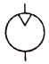
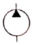
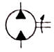
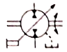
(정답률: 64%)
95. 요동형 실린더가 아닌 것은?
- 베인형 실린더
- 피스톤형 실린더
- 스크루형 실린더
- 로킹암형 실린더
(정답률: 45%)
96. PLC와 같은 장치가 속하는 부분은?
- 센서
- 네트워크
- 프로세서
- 동력 제어부
(정답률: 66%)
97. 다음 유압 회로도를 구성하는 기기의 명칭이 틀린 것은?
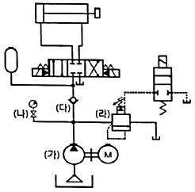
- (가) 정용량형 펌프
- (나) 스톱밸브
- (다) 체크밸브
- (라) 어큐뮬레이터
(정답률: 63%)
98. 직류 전동기에서 전기자의 권선에 생기는 교류를 직류로 바꾸는 부분의 명칭은?
- 계자
- 전기자
- 정류자
- 타여자
(정답률: 67%)
99. 설비보전의 효과측정을 위한 척도로 사용되는 지표의 설명으로 옳은 것은?
- 설비 가동률은 경제성을 의미한다.
- 고장 강도율은 유용성을 의미한다.
- 고장 도수율은 신뢰성을 의미한다.
- 제품 단위당 보전비는 보전성을 의미한다.
(정답률: 46%)
100. 밸브 내부에서 연속적인 진동으로 밸브 시트 등을 타격하여 진동과 소음을 발생시키는 현상은?
- 공동현상
- 맥동현상
- 채터링현상
- 크래킹현상
(정답률: 50%)